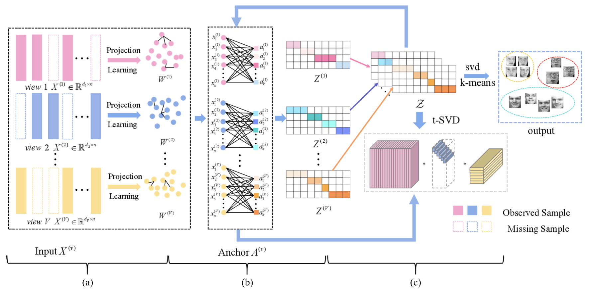
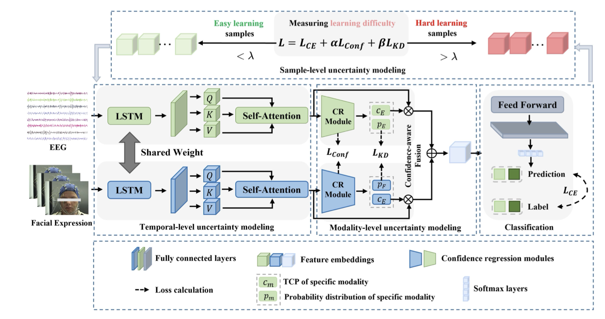
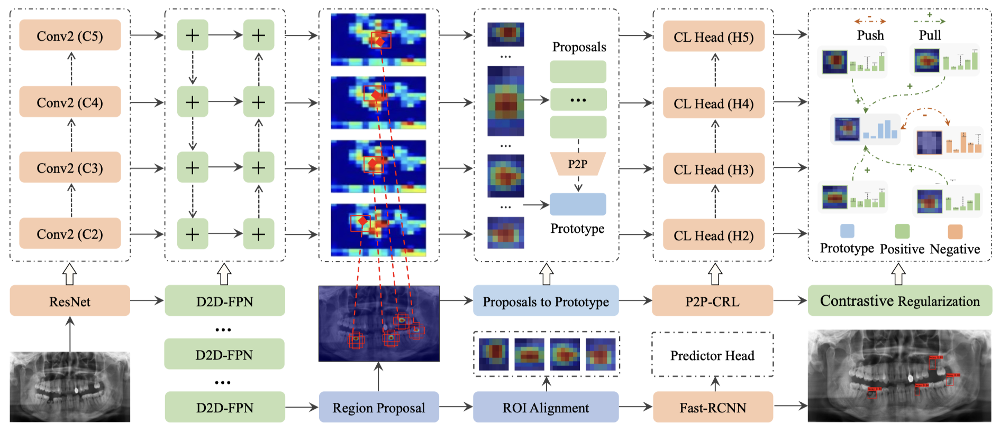
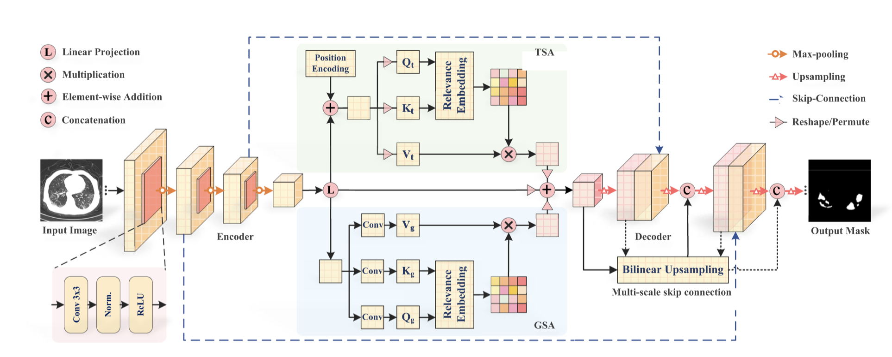
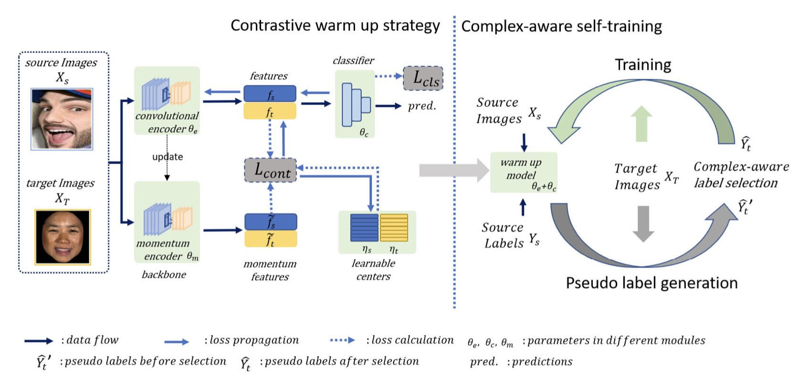
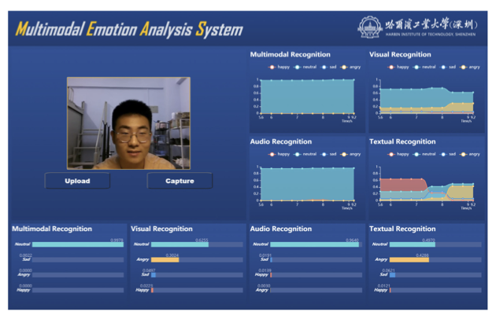
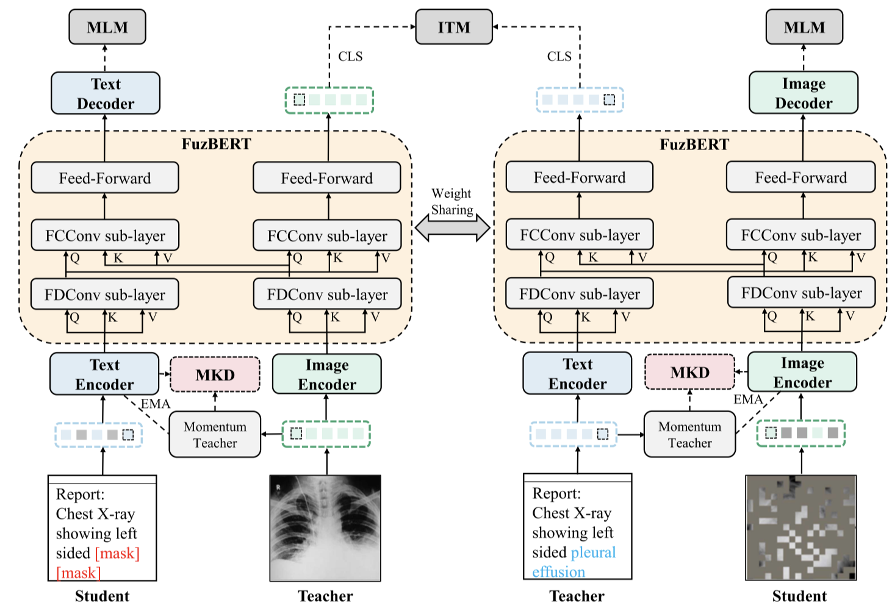

发表：IEEE Transactions on Neural Networks and Learning Systems 作者：Yongyong Chen; Xiaojia Zhao; Zheng Zhang; Youfa Liu; Jingyong Su; Yicong Zhou 时间：2023

发表：International Conference on Medical Image Computing and Computer-Assisted Intervention 作者：Bingzhi Chen, Zhanhao Ye, Yishu Liu, Zheng Zhang, Jiahui Pan, Biqing Zeng, Guangming Lu 时间：2023
发表：IEEE Transactions on Affective Computing 作者：Qi Zhu; Chuhang Zheng; Zheng Zhang; Wei Shao; Daoqiang Zhang 时间：2023

发表：Proceedings of the AAAI Conference on Artificial Intelligence 作者：Bingzhi Chen; Sisi Fu; Yishu Liu; Jiahui Pan; Guangming Lu; Zheng Zhang 时间：2024

发表：IEEE Transactions on Emerging Topics in Computational Intelligence 作者：Bingzhi Chen; Yishu Liu; Zheng Zhang; Guangming Lu; Adams Wai Kin Kong 时间：2023

发表：IEEE Transactions on Image Processing 作者：Yingjian Li; Jiaxing Huang; Shijian Lu; Zheng Zhang; Guangming Lu 时间：2023

发表：MM '23: Proceedings of the 31st ACM International Conference on Multimedia 作者：Zheng Zhang, Songling Chen, Mixiao Hou, Guangming Lu 时间：2023

发表：IEEE Transactions on Fuzzy Systems 作者：Yishu Liu; Bingzhi Chen; Shuihua Wang; Guangming Lu; Zheng Zhang 时间：2024
